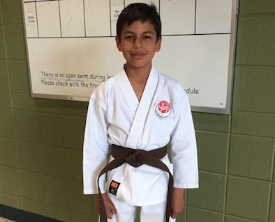
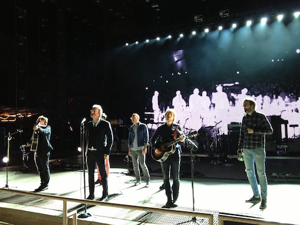

Oswaldo Salazar's Home Page
Welcome to my first website. I'm excited to study at Galvanize and to be
part of the Denver tech community. Here you will find a bit of information about me, my
background and goals as a tech professional.
Background
I'm originally from Quito - Ecuador, where I graduated as an electronic engineer at the Army Polythecnic School. Ecuador is a small country in South America, the same size of Colorado, but with a truly diverse environment. You can drive from the rainforest, across the Andes to the coast in one day. If you are planning to travel to South America, I highly recommend my country as a destination.
The next year after my graduation I was recruited by the O&G service company
Schlumberger.
While working for this company I had the chance to work in different countries and with people of many nationalities. The Galvanize class reminds me a lot of my intensive training sessions, where I met people from all over the world with different backgrounds. All of us where highly motivated and shared similar interest and aspirations.
My life and Hobbies

I'm the father of a nine-year old boy. He is my pride and joy. He was born in Brazil while I was on a job assignment there. We moved to the US when he was one-year old. He's very curious and smart. We like to talk about anything, from music to sports to politics. He likes MineCraft and other video games. In the last winter, he was part of the cast of The Nutcracker production with the Colorado Ballet.
 I am a very lucky guy! I have the best girlfriend in the world. She's very
kind and supportive. She's a certified life coach. She's also an exercise and nutrition advisor (and the best cook ever!). She's American but speaks perfect Spanish. After this course I hope to be able to optimize her blog website and build an app for her business.
I am a very lucky guy! I have the best girlfriend in the world. She's very
kind and supportive. She's a certified life coach. She's also an exercise and nutrition advisor (and the best cook ever!). She's American but speaks perfect Spanish. After this course I hope to be able to optimize her blog website and build an app for her business.
Karate is my favorite physical activity. I've been practicing Shotokan karate
since 2009. I hold a 2nd kyu rank (2nd level brown belt). My son, my girlfriend
and I practice karate at ISKF
Colorado.
I highly recommend this activity. It's a very detailed oriented activity and
it's great for strength, focus and concentration.

Besides karate, I like to explore the mountains in the great state of
Colorado and elsewhere.
I also like to travel and learn about other cultures. Since I was a kid, I've
always had a great interest in music, so I like to attend live music shows of
many music genres.
Please visit the second part of my homepage here
.